cline
Under this identifier are defined the parameters to compute the critical and the caustic lines.
nplane int float [float]
int defines the number of Source Plane for which will be computed the critical and caustic lines.
The list of float arguments give the redshift of these planes.
Results are put in 2 different files: ”ce.dat” (external critic and caustic lines), ”ci.dat” (internal critic and caustic lines). ”ce.dat” and ”ci.dat” are 5-columns ASCII files with the format: 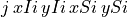:  is the line identifier (we can have more than one external or internal lines). 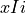 and 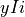 are the coordinates of the critical lines. 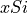 and 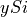 are the coordinates of the corresponding caustic lines.
is the line identifier (we can have more than one external or internal lines). 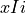 and 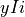 are the coordinates of the critical lines. 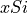 and 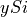 are the coordinates of the corresponding caustic lines.
zonemult int1 int2 filename
int1 = 0: if false int1 =1: if true. If true and if int of nplan equals 1, will determine for the redshift float of nplan the image multiplicity of each pixel ( int2
int2 frame) of the image plane (area defined by dmax ). Results are written in the pixel-frame file filename (fits file) If nplan not equals 1, zonemult is not executed, and a WARNING is displayed.
dmax float
Defines the area (xmin= -float , xmax = float ; ymin= -float , ymax = float ) where the critical lines are search. float is expressed in arcseconds. A typical value of dmax is 30. Default: the value defined in champ section.
algorithm string
string can be MARCHINGSQUARE (default) or SNAKE.
Select one of the two algorithms for the computation of the critical and caustic lines. The snake algorithm is the original algorithm implemented in LensTool. For each of the first nlens crit clumps of the lens model, the algorithm starts from the centre of the clump and looks for a point on a surrounding critical line (locus of the space where amplification is infinite). Then, it tries to follow this critical line and to go back to its original starting point. The marching squares algorithm defines a first square with the dmax or the champ keywords. Then, it divides this first cube in 4 small squares. According to their size and their amplification values in the centre and the 4 corners, each square is divided or not in further small squares. If the field is rectangular, the greater value between the width and the height of the field is choosen as the square size. As long as the size of a square is greater than limitHigh, it is automatically divided in 4 small squares. The size of a square cannot be lower than limitLow. The marching squares algorithm is slower than the line-following snake algorithm but gives always the full contour of the critical lines. It is less sensitive to small irregularities in the contour. The snake algorithm always returns a connected contour. Default algorithm is marchingsquares.
step float
For the line-following algorithm : Defines the step between each search i.e. it represents the typical distance in arcsecs between each point of the external critical lines. For internal critical lines half this value is taken. To improve the definition of the critic and caustic lines, use smaller values such as 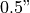 or even 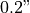. Default is 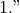
limitLow float
For the marching cube algorithm : Defines the smaller size of a square i.e. the size of a square is compared to this value to decide between dividing again in 4 squares or stopping the division. To improve the definition of the critic and caustic lines, use smaller values such as or even . This implies more computation time. Default is 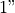.
limitHigh float
For the marching cube algorithm : Defines the higher size of a square i.e. the size of a square cannot be higher than this value. A square with a size above this value is automatically divided in 4 squares. Decrease this value to remove holes in the critical lines and improve the detection of critical lines around isolated galaxies. This implies more computation time. Default is 10”.